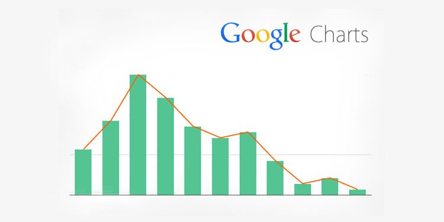
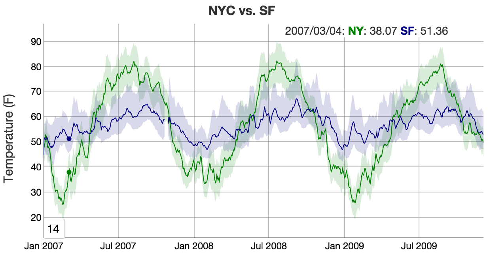
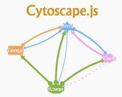
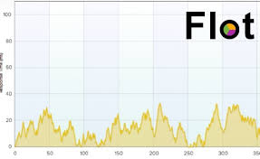
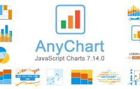
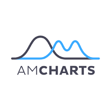
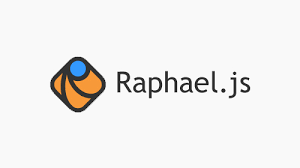
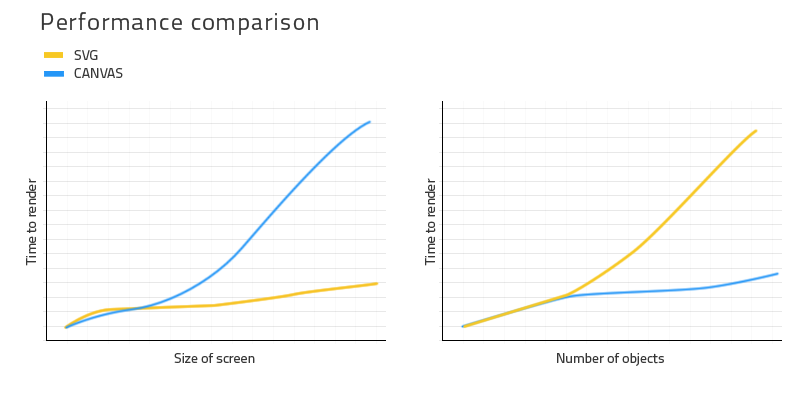

Open source JavaScript library
Used in a web environment or as an R package
Support for many standard data formats
Rich user interfaces to customize visualization
Built with Reproducible Research in mind